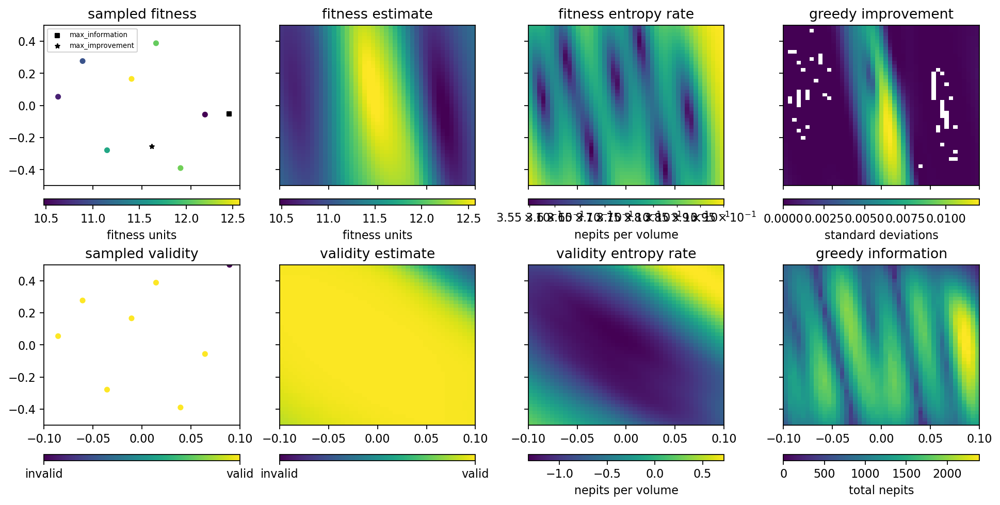
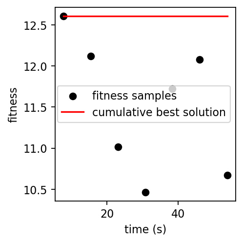
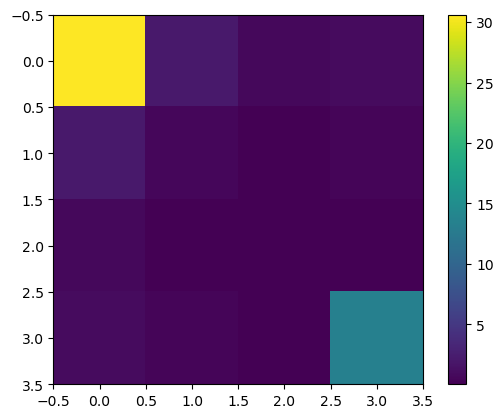

Run GP Optimizer¶
[1]:
%run -i ../../../examples/prepare_gp_optimizer.py
[2]:
gpo = Optimizer(
init_scheme='quasi-random',
n_init=8,
run_engine=RE,
db=db,
detector=w9,
detector_type='image',
dofs=dofs,
dof_bounds=hard_bounds,
fitness_model='max_sep_density',
training_iter=100,
verbose=True,
)
learning with strategy "quasi-random" ...
getshonecol: no GOOD rays, returning empty array
getshonecol: no GOOD rays, returning empty array
getshonecol: no GOOD rays, returning empty array
getshonecol: no GOOD rays, returning empty array
getshonecol: no GOOD rays, returning empty array
getshonecol: no GOOD rays, returning empty array
getshonecol: no GOOD rays, returning empty array
getshonecol: no GOOD rays, returning empty array
getshonecol: no GOOD rays, returning empty array
getshonecol: no GOOD rays, returning empty array
getshonecol: no GOOD rays, returning empty array
getshonecol: no GOOD rays, returning empty array
kbv_x_rot kbv_offz fitness
0 0.089332 0.499260 NaN
1 -0.010668 0.165926 12.604155
2 0.039332 -0.389629 12.118512
3 -0.060668 0.277037 11.014597
4 0.064332 -0.056296 10.466766
5 -0.035668 -0.278518 11.724022
6 0.014332 0.388148 12.079382
7 -0.085668 0.054815 10.672859
[3]:
gpo.plot_state(gridded=True)
gpo.plot_fitness()


[4]:
FM = gpo._contingent_fisher_information_matrix(gpo.test_params[0])[0]
plt.imshow(FM)
plt.colorbar()
[4]:
<matplotlib.colorbar.Colorbar at 0x7f6f104e2a70>

[5]:
gpo.evaluator.model.covar_module.state_dict()
[5]:
OrderedDict([('raw_output_scale', tensor([-2.6794])),
('raw_trans_diagonal', tensor([ 0.4918, -4.9458])),
('raw_trans_off_diag', tensor([0.2532])),
('raw_output_scale_constraint.lower_bound', tensor(0.)),
('raw_output_scale_constraint.upper_bound', tensor(inf)),
('raw_trans_diagonal_constraint.lower_bound', tensor(1.)),
('raw_trans_diagonal_constraint.upper_bound', tensor(10.)),
('raw_trans_off_diag_constraint.lower_bound', tensor(-1.)),
('raw_trans_off_diag_constraint.upper_bound', tensor(1.))])
[6]:
# valid strategies are 'quasi-random', 'explore', 'exploit', 'A-optimal', 'D-optimal'
# n_iter defines how many iterations of learning it will perform
# n_per_iter defines how many points it will sample between updating its model
# greedy determines whether it cares about anything beyond the next iteration
# reuse_hypers determines whether it re-fits the hyperparameters from scratch on model update
gpo.learn(n_iter=1, n_per_iter=1, strategy='quasi-random', greedy=True, reuse_hypers=False)
gpo.learn(n_iter=1, n_per_iter=1, strategy='explore', greedy=True, reuse_hypers=False)
gpo.learn(n_iter=1, n_per_iter=1, strategy='exploit', greedy=True, reuse_hypers=False)
gpo.learn(n_iter=1, n_per_iter=1, strategy='A-optimal', greedy=True, reuse_hypers=False)
gpo.learn(n_iter=1, n_per_iter=1, strategy='D-optimal', greedy=True, reuse_hypers=False)
learning with strategy "quasi-random" ...
kbv_x_rot kbv_offz fitness
8 0.099849 0.269106 NaN
learning with strategy "explore" ...
kbv_x_rot kbv_offz fitness
9 0.089088 -0.119162 10.192702
learning with strategy "exploit" ...
kbv_x_rot kbv_offz fitness
10 0.005707 -0.126443 12.289247
learning with strategy "A-optimal" ...
kbv_x_rot kbv_offz fitness
11 0.039792 -0.357675 12.070668
learning with strategy "D-optimal" ...
kbv_x_rot kbv_offz fitness
12 0.037678 -0.470784 11.969247
[7]:
dir(w9)
[7]:
['OphydAttrList',
'SUB_ACQ_DONE',
'_Device__set_kinds_according_to_list',
'_OphydObject__any_instantiated',
'_OphydObject__instantiation_callbacks',
'_OphydObject__register_instance',
'__annotations__',
'__class__',
'__copy__',
'__delattr__',
'__dict__',
'__dir__',
'__doc__',
'__eq__',
'__format__',
'__ge__',
'__getattr__',
'__getattribute__',
'__getnewargs_ex__',
'__gt__',
'__hash__',
'__init__',
'__init_subclass__',
'__le__',
'__lt__',
'__module__',
'__ne__',
'__new__',
'__reduce__',
'__reduce_ex__',
'__repr__',
'__setattr__',
'__sizeof__',
'__str__',
'__subclasshook__',
'__weakref__',
'_args_cache',
'_asset_docs_cache',
'_assets_dir',
'_attr_name',
'_callbacks',
'_cb_count',
'_cid_to_event_mapping',
'_component_kinds',
'_datum_factory',
'_default_configuration_attrs',
'_default_read_attrs',
'_default_sub',
'_destroyed',
'_device_tuple',
'_done_acquiring',
'_get_components_of_kind',
'_get_kind',
'_initialize_device',
'_instantiate_component',
'_kind',
'_mark_as_instantiated',
'_name',
'_ophyd_labels_',
'_original_vals',
'_parent',
'_repr_info',
'_required_for_connection',
'_reset_sub',
'_resource_document',
'_result_file',
'_root_dir',
'_run_subs',
'_set_kind',
'_sig_attrs',
'_signals',
'_staged',
'_sub_devices',
'_summary',
'_unwrapped_callbacks',
'_validate_kind',
'add_instantiation_callback',
'attr_name',
'check_value',
'clear_sub',
'collect_asset_docs',
'component_names',
'configuration_attrs',
'configure',
'connected',
'connection',
'control_layer_log',
'describe',
'describe_configuration',
'destroy',
'dotted_name',
'duration',
'element_position',
'event_types',
'get',
'get_device_tuple',
'get_instantiated_signals',
'hints',
'horizontal_extent',
'id',
'image',
'kind',
'lazy_wait_for_connection',
'log',
'mean',
'name',
'parent',
'pause',
'photon_energy',
'prefix',
'put',
'read',
'read_attrs',
'read_configuration',
'report',
'resume',
'root',
'shape',
'signal_names',
'sirepo_data_hash',
'sirepo_data_json',
'stage',
'stage_sigs',
'stop',
'subscribe',
'subscriptions',
'summary',
'title',
'trigger',
'trigger_signals',
'type',
'unstage',
'unsubscribe',
'unsubscribe_all',
'vertical_extent',
'wait_for_connection',
'walk_components',
'walk_signals',
'walk_subdevice_classes',
'walk_subdevices']
[ ]: